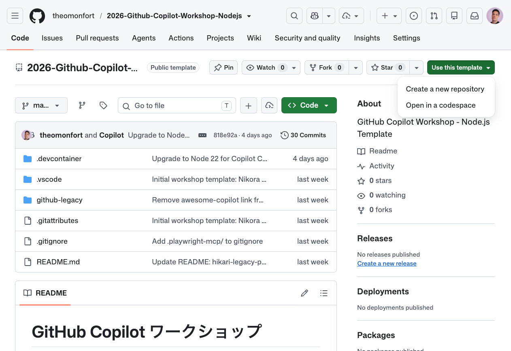
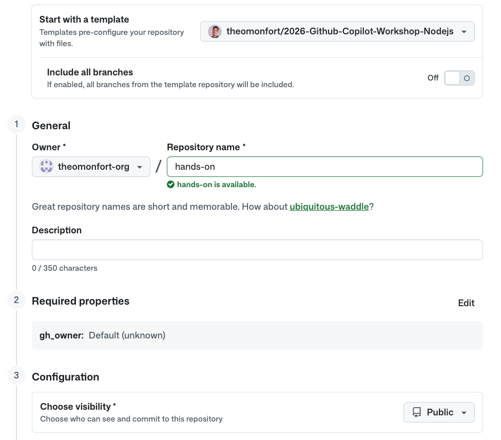
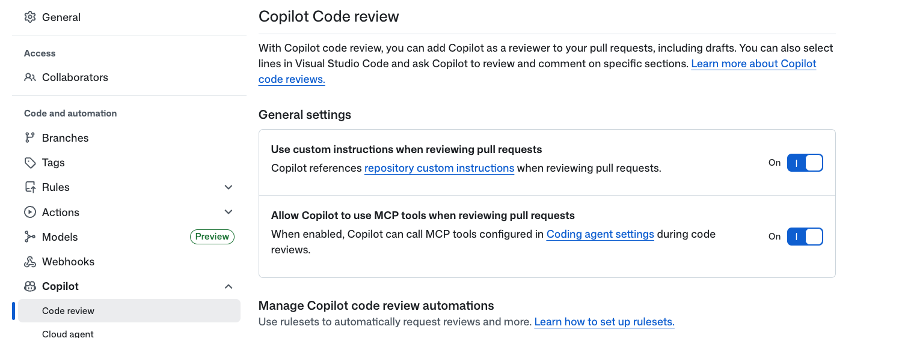
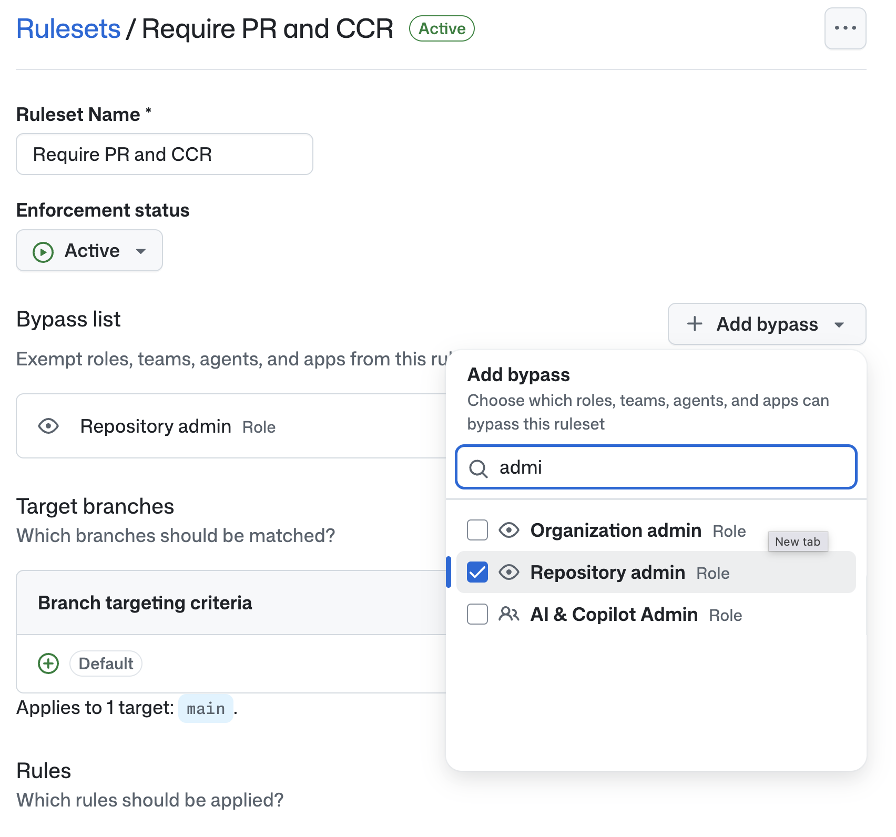
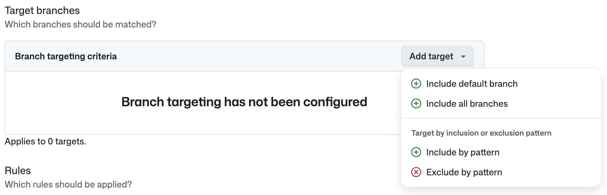
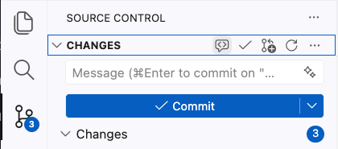

GitHub Copilotワークショップへようこそ！

このワークショップでは、レガシーPHPで作られた「AI駆動開発ガイド」ページ を題材に、GitHub Copilot の全機能を活用してモダンなウェブアプリケーションに変革する体験をしていただきます。
本日のゴール
- GitHub Copilot のセットアップとカスタマイズ方法を理解する
- Copilot Agent Mode でレガシーサイトを Next.js + TypeScript + Tailwind CSS に移行する
- 自動テスト、コード品質チェック、セキュリティスキャンを設定する
- Cloud Agent による自律的な機能実装を体験する
- Agentic Workflow で CI/CD パイプラインに AI を組み込む
- Copilot CLI で新規アプリケーションを構築する
本日のアジェンダ
パート | 内容 | 概要 |
Setup | プロジェクトセットアップ | テンプレートリポジトリから Codespaces を起動 |
1 | セットアップ＆カスタマイズ | /init、カスタム指示、Skill 作成、MCP 設定 |
2 | 実装：レガシーサイトの移行 | Plan Mode → Next.js + TypeScript + Tailwind への移行 |
3 | 自動テストと Actions | Vitest + Playwright テスト、CI ワークフロー |
4 | コード品質 | Copilot Code Review、GHAS 設定 |
5 | Cloud Agent | Issue からの自律的な機能実装 |
6 | Agentic Workflow | PAT 作成、テストカバレッジ自動更新 |
7 | CLI | AI 利用状況ダッシュボードの構築 |
前提条件
以下のいずれかの環境をご用意ください：
オプション A: 個人環境
- Visual Studio Code がインストールされていること
- GitHub CLI（
gh）がインストールされていること - GitHub Copilot のライセンスがあること（Business / Enterprise プラン推奨）
- GitHub アカウントを持っていること
オプション B: 企業環境（お客様向け）
- 以下の機能が有効化されたプライベート Organization を持っていること：
- GitHub Actions
- GitHub Copilot（Pro+ / Business / Enterprise）
- GitHub Advanced Security (GHAS)
- Organization 内でリポジトリを作成できる権限があること
このワークショップでは、以下の GitHub リポジトリを使用します：
プロジェクトURL: https://github.com/theomonfort/2026-Github-Copilot-Workshop-Nodejs
ステップ1: テンプレートからリポジトリを作成する
- プロジェクト URL をブラウザで開く
- 右上の Use this template ボタンをクリックし、Create a new repository を選択

- リポジトリ作成画面で以下を設定：
Owner（オーナー）の選択
個人で参加の場合：
- Owner は 自分のアカウント を選択
- Visibility は Public を選択（Free プランの場合、Public でないと一部機能が制限されます）
企業の Organization で参加の場合：
- Owner は Copilot / Actions / GHAS / Codespaces などが有効化された Organization を選択
- Visibility は Private を選択
Repository name（リポジトリ名）
- 任意の名前を入力してください（例:
hands-on-yourname）
- Create repository をクリック

ステップ2: Codespaces で開発環境を起動する
- 作成したリポジトリのページで、緑色の Code ボタンをクリック
- Codespaces タブを選択
- Create codespace on main をクリック

DevContainer が自動的に Node.js 20 環境をセットアップし、以下が事前にインストールされます：
- GitHub Copilot & Copilot Chat 拡張機能
- Live Server 拡張機能（プレビュー用）
- GitHub CLI
- GitHub MCP Server（自動検出有効化済み）
ステップ3: レガシーサイトを確認する
VS Code のターミナルを開き、以下のコマンドを実行してレガシーサイトを起動します：
cd github-legacy
php -S localhost:8080
Codespace がポート 8080 を自動検出し、「Open in Browser」 のポップアップが表示されます。クリックしてブラウザでサイトを確認してください。
これが今日のリファクタリング対象です。
このステップでは、Copilot に外部ツールへのアクセスを与える MCP（Model Context Protocol）Server を確認・追加します。MCP を整えると、Copilot が Issue 作成・最新ドキュメント参照などを直接実行できるようになります。
3.1 — GitHub MCP Server を確認する
このリポジトリには既に GitHub MCP Server が .vscode/mcp.json に設定されています。Codespace 起動時に VS Code が自動的に接続を確認します。
.vscode/mcp.json を開いて、以下の設定があることを確認してください：
{
"servers": {
"github-mcp-server": {
"type": "http",
"url": "https://api.githubcopilot.com/mcp/"
}
}
}
Copilot Chat の入力欄にある 🔧 ツールボタン（モデル選択の右側）をクリックして、github-mcp-server のツール（Issues / PRs / code search など）が一覧に表示されていることを確認しましょう。
⏱ 約1分
3.2 — Context7 MCP Server を追加する
Context7 は、ライブラリやフレームワークの 最新の公式ドキュメント を Copilot に取り込める MCP Server です。Astro / Tailwind / TypeScript など、進化の速いフレームワークを使う本ワークショップでは欠かせません。
- Copilot Chat の 🔧 ツールボタン をクリック
- 「Add MCP Server」 を選択
- 「Browse MCP Servers」 をクリック
- 初回の場合は 「Enable MCP Servers Marketplace」 を有効化
- 「Context7」 で検索し、Upstash の Context7 を選択
- 「Install in Workspace」 をクリック
インストール後、.vscode/mcp.json に context7 が追加されていることを確認してください：
{
"servers": {
"github-mcp-server": { "type": "http", "url": "https://api.githubcopilot.com/mcp/" },
"context7": {
"type": "http",
"url": "https://mcp.context7.com/mcp"
}
}
}
動作確認として、Copilot Chat で以下を試してみましょう：
Context7 を使って Astro の content collections の最新ドキュメントを要約してください。
⏱ 約2分
Instruction ファイルは、リポジトリやファイル単位で Copilot に 常駐ルール を与える「指示書」です。チーム全員の Copilot が同じ規約に従うようになります。
このステップでは、2 種類の Instruction ファイルを作成します：
.github/copilot-instructions.md— リポジトリ全体に常時適用 (言語・Stack・規約).github/instructions/frontend.instructions.md— フロントエンド系ファイルにのみ適用される Path Instruction（デザイントークン）
4.1 — リポジトリ共通の Instruction を作成する
Copilot Chat で以下を入力してください：
.github/copilot-instructions.md を作成してください。本文はすべて日本語で書いてください。
内容は以下のとおりにしてください：
# Copilot Instructions
## 言語
- すべての応答・コメント・コミットメッセージ・PR 説明は **日本語** で書く。
## Stack
- **Astro** のみ。Next.js・React Router・SvelteKit は使わない。
- ページ・レイアウトは Astro コンポーネント (.astro) を使う。
- マークダウンコンテンツは Astro の **content collections** (src/content/) を使う。
- スタイルは Tailwind CSS。必要に応じてスコープ付き <style> ブロック。
- TypeScript をすべての場所で使う (.ts, .astro frontmatter)。
## 規約
- ページは src/pages/。
- 再利用 UI は src/components/。
- マークダウンは src/content/<collection>/*.md。スキーマは src/content.config.ts。
- パッケージマネージャは **pnpm**。
## コードレビュー / 変更ルール
- 変更は最小限・外科的に。関係のないコードは触らない。
- 公開 API・型定義の変更には必ず理由を PR description に記載する。
- 新しい依存を追加する場合は理由とリスクを明記する。
- アクセシビリティ (a11y) を意識する: 適切な見出し階層、alt 属性、キーボード操作。
- 既存テストを壊さない。変更箇所に既存テストがあれば実行して確認する。
⏱ 約2分
4.2 — フロントエンド専用の Path Instruction を作成する
特定のファイルパターンにだけ適用される Path Instruction を作成します。VS Code は applyTo の glob にマッチするファイルを触るときだけ、このルールを Copilot に渡します。
Copilot Chat で以下を入力してください：
.github/instructions/frontend.instructions.md を作成してください。
本文はすべて日本語で書いてください。先頭の YAML frontmatter は以下のとおりにしてください：
---
applyTo: "**/*.{astro,css,tsx,jsx,ts,js,html}"
description: "フロントエンドのデザイントークン（レトロ JRPG テーマ）"
---
本文は以下を日本語で含めてください：
# フロントエンド設計ルール
スタイル・コンポーネント・レイアウトを触るときは、以下のトークンを必ず適用する。
## テーマ
レトロ JRPG / サイバーパンクのアーケード。暗い背景にネオンのアクセント、ピクセル系タイポグラフィ。
## カラー
| 役割 | Hex | 用途 |
| ----------------- | ---------- | --------------------------------- |
| 背景 (ベース) | `#05060f` | body / page |
| 背景 (パネル) | `#0a0e27` | カード・サイドバー |
| ネオンマゼンタ | `#ff2e88` | プライマリアクセント・アクティブ |
| ネオンシアン | `#00f0ff` | セカンダリ・ホバー・リンク |
| アンバー | `#ffb000` | 警告・ハイライト |
| フォスファ緑 | `#9bbc0f` | 成功・CRT 風テキスト |
| テキスト (通常) | `#e6f1ff` | 暗い背景上の本文 |
| テキスト (薄) | `#7a8aa8` | 補助テキスト |
## フォント
- 見出し / UI: **`'DotGothic16'`** (ピクセル)、fallback `monospace`。
- 本文 (日本語 + ラテン): **`'Noto Sans JP'`**、fallback `system-ui, sans-serif`。
- コード: `'JetBrains Mono', 'Menlo', monospace`。
Tailwind ユーティリティ: `font-pixel` (DotGothic16)、`font-body` (Noto Sans JP)。
## エフェクト
- 画面オーバーレイに控えめな CRT スキャンライン。
- ネオングロー: `text-shadow: 0 0 8px <color>` / `box-shadow: 0 0 12px <color>`。
- ボーダー: `1px dashed` または `2px solid` のネオンカラー。
- コントラストは高めに。淡いパステルグラデは禁止。
## してはいけないこと
- 明るい / 白の背景。
- 完全な丸 (pill) 形状。角丸は最大 4px まで。
- 灰色のソフトドロップシャドウ。グロー (neon glow) のみ使う。
⏱ 約2分
Agent Skill は、Copilot に「特定のタスクのこなし方」を仕込む再利用可能な指示セットです。プロンプトに合致したときに自動で召喚され、毎回テンプレを説明し直す必要がなくなります。
このステップでは、Issue を整った形で書ける Skill を入れて、実際に Issue を 1 件作ってみます。
5.1 — github-issues Skill をインストール
github/awesome-copilot から github-issues Skill を入れます。このスキルは bug report / feature request / task など複数のテンプレを持ち、ラベル・優先度・依存関係まで含めた構造化された Issue を書けるようになります。
VS Code のターミナルで以下を実行してください：
gh skill install github-issues
インストールが完了すると .github/skills/github-issues/SKILL.md が追加されます。中身を開いて Copilot がどんなときにこの Skill を呼ぶのか、どんなテンプレを持っているのかを確認してみてください。
⏱ 約1分
5.2 — MCP + Skill で Issue を作成する
GitHub MCP Server + github-issues Skill を組み合わせて、構造化された Issue を 1 件作成します。Copilot Chat で以下のプロンプトを入力してください：
GitHub MCP Server を使って、このリポジトリに以下の Issue を作成してください。
github-issues skill のテンプレートに従い、ユーザーストーリー・受け入れ基準・実装ノートを含む構造化された feature request にしてください。
タイトル: Add English support on the website
背景:
- 現在サイトはすべて日本語で書かれている。海外のエンジニアにも届けたい。
要件:
- Astro の i18n ルーティング (`/en/...`) で英語版を追加する。フォールバックは日本語。
- ナビゲーション・ボタン等の UI 文字列は src/i18n/ja.ts / en.ts に切り出す。
- src/content/ のマークダウンは ja / en の両言語を併設できる構造にする。
- 言語切替トグルをサイトのヘッダーに追加する。
受け入れ基準:
- /en/ ルートでサイト全体が英語で閲覧できる。
- 翻訳が無いページはフォールバックで日本語を表示し、上部に warning banner を出す。
- 既存の SEO (sitemap, OG tags) が両言語で正しく出力される。
ラベル: feature, i18n, frontend
⏱ 約2分
4.1 — Copilot Code Review の設定を有効化する
まず、Copilot Code Review の設定を確認します。
- リポジトリの Settings → Copilot → Code review
- 以下を有効化：
- Use custom instructions when reviewing pull requests → On
- Allow Copilot to use MCP tools when reviewing pull requests → On

4.2 — Ruleset で自動レビューを設定する
PR 作成時に Copilot が自動的にコードレビューを行う設定をします。
- リポジトリの Settings → Rules → Rulesets → New ruleset → New branch ruleset
- Ruleset 名を入力（例:
Require PR and CCR） - Enforcement status を Active に変更
- Bypass list → Add bypass → Repository admin を追加
- Target branches → Add target → Include default branch を選択
- Require a pull request before merging を有効化
- Required approvals を 1 に設定
- Automatically request Copilot code review にチェック
- Create をクリック


4.3 — GitHub Advanced Security (GHAS) を設定する
- リポジトリの Settings → Security → Advanced Security
- Dependabot セクション：
- Dependabot security updates を有効化
- Dependabot version updates を有効化
- （オプション）Tools → CodeQL analysis → Set up → Default → Enable CodeQL

4.4 — VS Code でコードレビューを実行する
PR を作成する前に、VS Code 上でコードレビューを実行できます。
- Source Control タブを開く
- CHANGES の横にある Review uncommitted changes（🔍アイコン）をクリック

Copilot がコードの問題点や改善提案をコメントしてくれます。
4.5 — コミット・Push・PR 作成
コード品質の設定が完了したら、コードをコミットして Pull Request を作成しましょう。
すべての変更をコミットして feature/modernize ブランチにプッシュし、main ブランチへの Pull Request を作成してください。
PR の説明に「Closes #（移行Issueの番号）」を含めてください。
4.6 — PR の結果を確認する
作成した PR を確認しましょう。Copilot Code Review が自動的に実行され、以下が表示されます（⏱ 約5分）：
- ✅ Pull Request Overview — PR 全体のサマリーコメント
- ✅ コード提案 — 各ファイルに対する具体的な改善提案
- ✅ CodeQL スキャン — セキュリティ脆弱性のスキャン（⏱ 追加で約3分）
4.7 — レビュー提案を修正する
Copilot のレビュー提案を修正する方法は2つあります：
- Commit suggestion — 個別の提案を1つずつコミット
- Fix batch with Copilot — すべての提案を一括で修正（おすすめ）
Fix batch with Copilot をクリックすると、修正内容を含む 新しい PR が自動的に作成されます（⏱ 約15分）。
- まず 修正用の新しい PR をマージ
- 次に 元の PR（feature/modernize） をマージ
5.1 — Copilot の設定を確認する
Cloud Agent を使用するために、以下の設定を確認します：
- GitHubの右上のプロフィールアイコン → Copilot settings
- Copilot Cloud Agent が有効になっていることを確認
5.2 — 既存の Issue に Cloud Agent をアサインする
Step 1.4 で作成した Issue の中から、Cloud Agent に実装させたい Issue を開きます。
- Issue を開く
- 右サイドバーの Assignees をクリック
- Copilot（GitHub）、Claude（Anthropic）、Codex（OpenAI）から選択してアサイン

アサイン時に以下をカスタマイズできます：
- 追加プロンプト — Issue の説明に補足指示を追加
- モデル選択 — Copilot / Claude / Codex から選択
- ベースブランチ — 作業の起点となるブランチを指定
5.3 — PR を確認してマージする
Cloud Agent が作成した PR は Draft（下書き） 状態で作成されます。
- PR を開き、内容を確認
- Ready for review をクリックして Draft を解除
- Copilot Code Review が自動的に開始されます
- レビュー完了後、PR をマージ

5.4 — 最新コードを取得して確認する
Cloud Agent の PR がマージされたら、Codespace で最新のコードを取得してサイトを確認しましょう。
git checkout main && git pull && npm install && npm run dev
ポートフォワーディングの通知が表示されたら 「ブラウザで開く」 をクリックして、Cloud Agent が実装した新機能を確認してください。
GitHub Actions と Copilot（AI）を組み合わせることで、コードの変更を検知して自律的なタスクを自動実行する Agentic Workflow を体験しましょう。
Agentic Workflow とは: GitHub Actions のワークフロー内で Copilot を活用し、リポジトリの変更に応じた自律的なタスク（レポート生成、ドキュメント更新、コード修正など）を実行する仕組みです。
gh aw のインストール
まず、Agentic Workflow の CLI ツールをインストールします。
ローカル環境の場合：
gh extension install github/gh-aw
Codespaces やネットワーク制限がある環境の場合（GA 前のため）：
curl -sL https://raw.githubusercontent.com/github/gh-aw/main/install-gh-aw.sh | bash
6.1 — Personal Access Token (PAT) を作成する
Agentic Workflow で Copilot を活用するために PAT を作成します。
- https://github.com/settings/personal-access-tokens/new にアクセス
- 設定内容：
- Token name:
copilot-workshop-agent - Resource owner: リポジトリを作成した Organization（または個人アカウント）
- Repository access: Only select repositories → 作成したリポジトリを選択
- Permissions:
- Actions: Read and write
- Contents: Read-only
- Issues: Read and write
- Metadata: Read-only（自動付与）
- Pull requests: Read and write
- Token name:
 3. 作成した PAT をコピー
3. 作成した PAT をコピー
リポジトリシークレットに設定
- リポジトリの Settings → Secrets and variables → Actions
- New repository secret をクリック
- Name:
COPILOT_GITHUB_TOKEN、Value: 作成した PAT
Workflow permissions の確認
- Settings → Actions → General
- Allow GitHub Actions to create and approve pull requests にチェック
6.2 — Daily Repo Status ワークフローを作成する
今日のリポジトリ活動を自動レポートする Agentic Workflow を作成しましょう。
エージェントモードで以下を実行：
以下の Agentic Workflow を作成してください。
ファイル: .github/workflows/daily-repo-status.md
目的: リポジトリの活動（Issue、PR、コード変更）を分析し、
日次ステータスレポートを Issue として自動作成する。
フォーマット:
- YAML front matter で設定を定義（on, permissions, tools, safe-outputs）
- Markdown 本文でワークフローの指示を記述
設定:
- トリガー: schedule: daily と workflow_dispatch
- permissions: contents: read, issues: read, pull-requests: read
- tools: github（lockdown: false, min-integrity: none）
- safe-outputs: create-issue で title-prefix "[repo-status] "、
labels: [report, daily-status]、close-older-issues: true
ワークフローの指示:
1. リポジトリの最近の活動（Issue、PR、コード変更）を収集
2. 進捗やハイライトを分析
3. 結果を GitHub Issue として作成
参考: https://github.com/githubnext/agentics/blob/main/workflows/daily-repo-status.md
完了したら `gh aw compile` コマンドを実行してワークフローをコンパイルし、
変更をコミットして PR を作成してください。
PR をマージした後、Actions タブからワークフローを手動実行します：
- リポジトリの Actions タブを開く
- 左メニューから Daily Repo Status を選択
- Run workflow → Run workflow をクリック

実行完了後（⏱ 約2分）、リポジトリの Issues タブに [repo-status] というプレフィックスの Issue が自動作成され、今日の PR、Issue、コード変更の活動サマリーが表示されます。
6.3 —（ボーナス）テストカバレッジ自動更新ワークフローを作成する
余裕がある方は、テストカバレッジレポートを自動更新するワークフローも作成してみましょう。
エージェントモードで以下を実行：
以下の Agentic Workflow を作成してください。
参照: https://github.com/github/gh-aw/blob/main/create.md
ワークフローの目的：
- main ブランチへの push 時にトリガー
- テストを実行してカバレッジレポートを生成
- カバレッジ結果を README.md のバッジとして自動更新
- 変更がある場合は PR を自動作成
ワークフローファイルは .github/workflows/coverage-update.md に配置してください。
Copilot CLI は、ターミナル上で動作する対話型 AI アシスタントです。VS Code を開かずに、コード生成・レビュー・リファクタリングなどを自律的に実行できます。
主なコマンド
コマンド | 説明 |
| AIモデルの選択（Claude、GPT 等） |
| モード切り替え（plan、agent 等） |
| リポジトリをスキャンし copilot-instructions.md を生成 |
| コードレビューを実行 |
| 複数エージェントの並列実行 |
| セッション履歴の確認 |
| スキルの管理・実行 |
| 前回のセッションを再開 |
7.1 — Copilot CLI を起動する
VS Code のターミナルで Copilot CLI を起動します：
copilot
7.2 — AI 利用状況ダッシュボードを構築する
Copilot CLI を使って、組織内の AI 利用状況を可視化するウェブサイトを構築します。
準備
/allow-all
/model
最も高性能なモデル（例: Claude Opus 4.6）を選択してください。
実装
Shift+Tab で Autopilot モードに切り替えた後、以下のプロンプトを実行：
/fleet 組織内の GitHub Copilot 利用状況を可視化するダッシュボード Web アプリケーションを ai-usage-dashboard/ ディレクトリに構築してください。
要件:
- フレームワーク: Next.js + TypeScript + Tailwind CSS
- GitHub Copilot Metrics API を使用してデータを取得
- エンドポイント: GET /orgs/{org}/copilot/metrics
- 認証: Bearer Token（環境変数 GITHUB_TOKEN から取得）
- ダッシュボード機能:
- アクティブユーザー数の推移グラフ
- 言語別のコード提案受入率
- 日別・週別の利用統計
- チャット vs コード補完の利用比率
- チャート: Recharts を使用
- レスポンシブデザイン
- ダークモード対応
- 動作確認まで行ってください
7.3 — 複数モデルでコードレビュー
作成したダッシュボードのコードを複数モデルでレビューします：
/review Claude Opus 4.6 と GPT-5.4 の各モデルで ai-usage-dashboard/ のコードをレビューし、結果を比較して表示してください
7.4 — Chronicle で利用状況を分析する
最後に、Copilot CLI の experimental モードを使って、自分の AI 利用状況を分析してみましょう。
/experimental
Chronicle コマンドを使用して、ワークショップ中の Copilot 利用状況のアドバイスを取得します：
chronicle
今日学んだこと
このワークショップでは、GitHub Copilot の全機能を横断的に体験しました：
- セットアップ＆カスタマイズ —
/init、カスタム指示、Skill 作成、MCP 設定 - Plan Mode による設計 — レガシーサイトの移行計画策定
- Agent Mode による実装 — Next.js + TypeScript + Tailwind CSS への移行
- 自動テスト — Vitest + Playwright + GitHub Actions
- コード品質 — Copilot Code Review + GHAS
- Cloud Agent — Issue からの自律的な機能実装
- Agentic Workflow — CI/CD パイプラインへの AI 統合
- Copilot CLI —
/fleetによる並列実装、/reviewによる複数モデルレビュー
次のステップ
- 実際のプロジェクトで Copilot を活用してみる
- Copilot Extensions や MCP Server を活用して開発ワークフローを拡張する
- Cloud Agent で日常的なタスクを自動化する
- Copilot CLI を日常の開発に組み込む